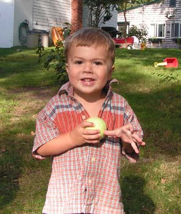

 Alec Steven Ross was our dear little boy - our first born. He was born the 14th of February, 2002, and died much too soon on the 7th of September, 2004.
Many people ask how he died. He choked on a cheese stick. He was at the home of someone who sometimes used to watch our boys for us. As much as she tried, she was never able to clear his airway. And the sad truth is, with choking accidents and kids, you don't have very long. A few minutes maybe, but not enough time to wait for the EMTs to arrive. A terrible tragedy.
Here's a newspaper article about the accident, and the obituary.
- - -
But rather than how he died, let's remember how he lived!
Alec was a joyful, loving, and kind little boy, who loved his little brother, Liam; loved to play in the water; loved to dance naked. Loved music, especially Raffi.
Here are some more pictures of Alec collected by friends who knew him. A celebration of Alec's time with us.
We also had people write down favorite memories of Alec and give them to us. After enough time had passed so we could look at those without completely falling apart, we assembled those and some favorite pictures into a scrap book we call "Alec's Memory Book". The idea to do this was suggested by a friend not long after Alec died, and we're very gateful for the suggestion. We like to take out Alec's Memory Book on his birthday and spend some quiet time remembering our sweet little Valentine's day boy.
Thanks for coming to look,
The Ross Family